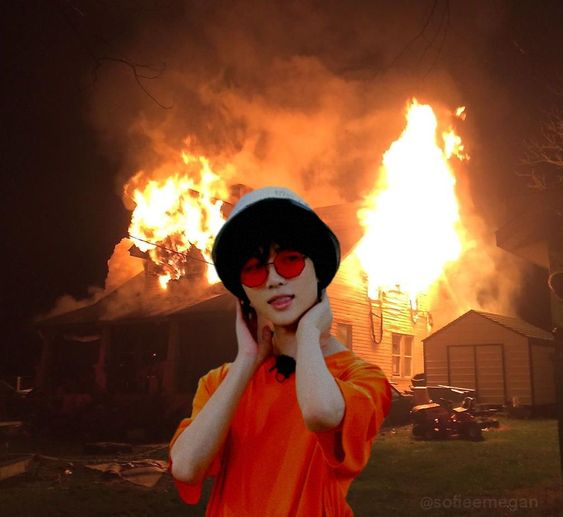

ᴍʀ. ᴄʜᴏɪ ʙᴜʀɴɪɴɢ ᴅᴏᴡɴ ʜɪꜱ ᴀɢᴇɴᴄʏ'ꜱ ꜱᴛᴜᴅɪᴏ
Mr. Choi reportedly left the stove unattended while he was cooking ramyeon in his agency's dorm. He went to 7/11 to buy soju which took him 12 hours to accomplish. The next thing he knew, he was fired. (Literally) |
ᴄʀᴀᴢʏ ᴄʜɪʟᴅ ʟᴇꜰᴛ ᴜɴᴀᴛᴛᴇɴᴅᴇᴅ ᴡʜɪʟᴇ ᴘʟᴀʏɪɴɢ ᴡɪᴛʜ ᴄᴀɴᴅʟᴇꜱ
Mr. Choi's child was left home alone when Mr. Choi was out buying soju at 7/11. When our squad arrived at the location, the child was found doing a live on Instagram with approximately 8 billion viewers watching his house burn down. It was reported that he lighted up all their candles because he thought that his house was a giant birthday cake since it has been 12 days since he last ate, ever since his dad left to buy at 7/11.
|
|
Lost mother plugs too much sockets and burns down the President's mansion
Mrs. Choi's eyesight is very horrible and accidentally entered the President's house by mistake because she thought it looked like her own house. The mother reported to our team that it was very hot that day so she decided to plug in every electric fan in the house. About 400 fans were plugged at that time which caused a serious fire.
|
|
ICT Student "accidentally" burns down school
Mr. Park from Pagod Na Ako University (PNAU) had set up a fire in the ICT lab. He claimed that it was an accident however, a clear CCTV footage of him showed that he purposefully threw a match inside the lab. The students claimed that Mr. Park was crazy. While, the teacher stated,"Mabait naman na estudyante si Sunghoon pero recently, I found out na nababaliw pala siya sa klase ko. Mukha naman siyang okay during our lectures but there was this one time I was just passing by the lab and I saw him through the window. He kept on screaming "AYOKO NAAA! MAY GALIT ATA SAKIN TONG BOOTSTRAP NA TO AYAW GUMANA CODE KO!!! PALABASIN NYO NAKO DITO! 12 HOURS NAKO NAGCOCODING DAPAT BINABAYARAN AKO PARA DITO!!! SINO BA KASI NAGPAUSO NG CODING!" And that was the last time I saw him and now I wake up to this disaster, hayst, grabe nakakabaliw nga talaga subject ko."
haha clue ako po si sunghoon 😊
|